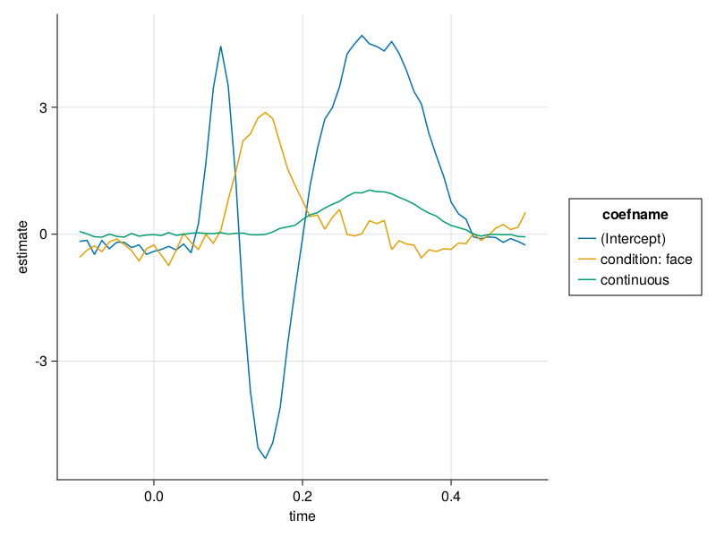
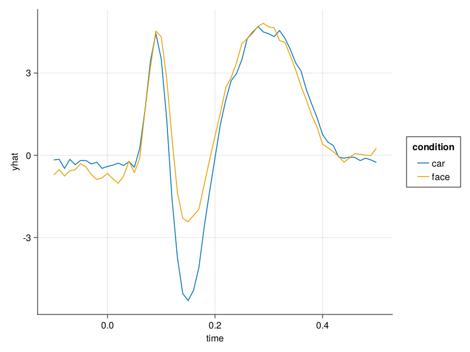
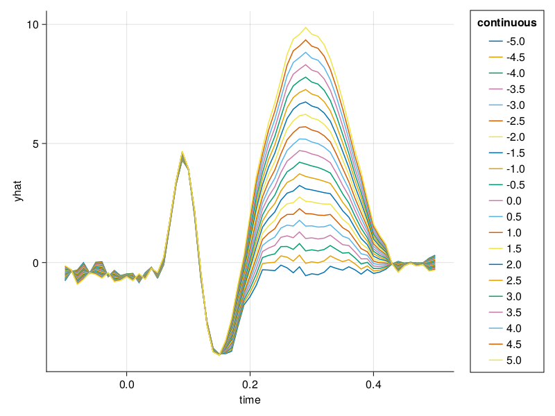
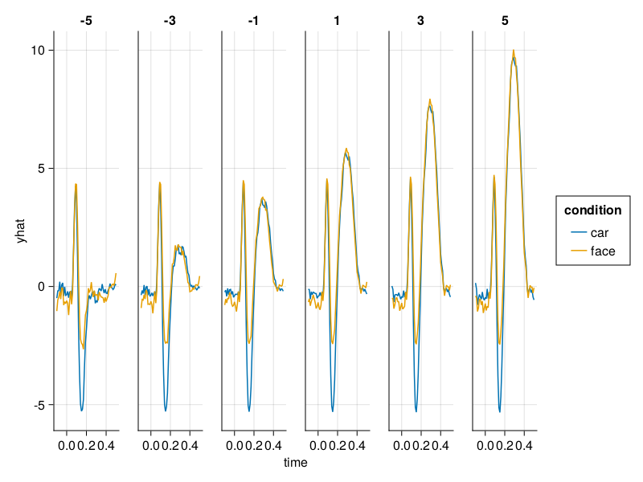
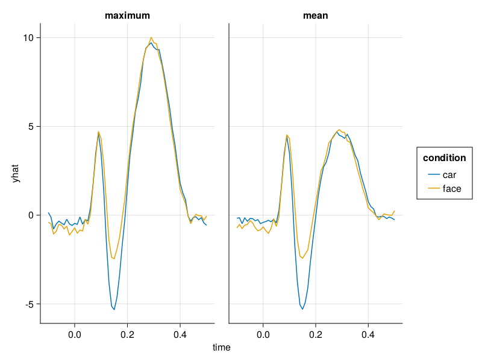

Effects
Effects are super useful to understand the actual modelfits. If you are an EEG-Researcher, you can think of effects as the "modelled ERPs", and the coefficients as the "difference-waves". In some way, we are fitting a model with coefficients and then try to get back the "original" ERPs - of course typically with some effect adjusted, overlap removed or similar - else why bother ;)
Define some packages
using Unfold
using DataFrames
using Random
using CSV
using UnfoldMakie
using UnfoldSim
using UnfoldMakieSetup things
Let's generate some data and fit a model of a 2-level categorical and a continuous predictor with interaction.
data,evts = UnfoldSim.predef_eeg(;noiselevel=8)
basisfunction = firbasis(τ = (-0.1, 0.5), sfreq = 100, name = "basisA")
f = @formula 0 ~ 1+condition+continuous # 1
m = fit(UnfoldModel, Dict(Any=>(f,basisfunction)), evts, data,eventcolumn="type")Unfold-Type: UnfoldLinearModelContinuousTime
formula: Dict{DataType, Tuple{StatsModels.FormulaTerm{StatsModels.ConstantTerm{Int64}, Tuple{StatsModels.ConstantTerm{Int64}, StatsModels.Term, StatsModels.Term}}, FIRBasis}}(Any => (0 ~ 1 + condition + continuous, name: basisA
collabel: time
colnames: [-0.1, -0.09, -0.08, -0.07, -0.06, -0.05, -0.04, -0.03, -0.02, -0.01, 0.0, 0.01, 0.02, 0.03, 0.04, 0.05, 0.06, 0.07, 0.08, 0.09, 0.1, 0.11, 0.12, 0.13, 0.14, 0.15, 0.16, 0.17, 0.18, 0.19, 0.2, 0.21, 0.22, 0.23, 0.24, 0.25, 0.26, 0.27, 0.28, 0.29, 0.3, 0.31, 0.32, 0.33, 0.34, 0.35, 0.36, 0.37, 0.38, 0.39, 0.4, 0.41, 0.42, 0.43, 0.44, 0.45, 0.46, 0.47, 0.48, 0.49, 0.5]
kerneltype: FIRBasis
times: [-0.1, -0.09, -0.08, -0.07, -0.06, -0.05, -0.04, -0.03, -0.02, -0.01, 0.0, 0.01, 0.02, 0.03, 0.04, 0.05, 0.06, 0.07, 0.08, 0.09, 0.1, 0.11, 0.12, 0.13, 0.14, 0.15, 0.16, 0.17, 0.18, 0.19, 0.2, 0.21, 0.22, 0.23, 0.24, 0.25, 0.26, 0.27, 0.28, 0.29, 0.3, 0.31, 0.32, 0.33, 0.34, 0.35, 0.36, 0.37, 0.38, 0.39, 0.4, 0.41, 0.42, 0.43, 0.44, 0.45, 0.46, 0.47, 0.48, 0.49, 0.5, 0.51]
shiftOnset: -10
))
Useful functions:
design(uf) (returns Dict of event => (formula,times/basis))
designmatrix(uf) (returns DesignMatrix with events)
modelfit(uf) (returns modelfit object)
coeftable(uf) (returns tidy result dataframe)
Plot the results
plot_erp(coeftable(m))
As expected, we get four lines - the interaction is flat, the slope of the continuous is around 4, the categorical effect is at 3 and the intercept at 0 (everything is dummy coded by default)
Effects
A convenience function is effects. It allows to specify effects on specific levels, while setting non-specified ones to a typical value (usually the mean)
eff = effects(Dict(:condition => ["car","face"]),m)
plot_erp(eff;mapping=(:color=>:condition,))
We can also generate continuous predictions
eff = effects(Dict(:continuous => -5:0.5:5),m)
plot_erp(eff;mapping=(:color=>:continuous,:group=>:continuous=>nonnumeric),setExtraValues=(categoricalColor=false,categoricalGroup=false))
or split it up by condition
eff = effects(Dict(:condition=>["car","face"],:continuous => -5:2:5),m)
plot_erp(eff;mapping=(:color=>:condition,:col=>:continuous=>nonnumeric))
What is typical anyway?
The user can specify the typical function applied to the covariates/factors that are marginalized over. This offers even greater flexibility. Note that this is rarely necessary, in most applications the mean will be assumed.
eff_max = effects(Dict(:condition=>["car","face"]),m;typical=maximum) # typical continuous value fixed to 1
eff_max.typical .= :maximum
eff = effects(Dict(:condition=>["car","face"]),m)
eff.typical .= :mean # mean is the default
plot_erp(vcat(eff,eff_max);mapping=(;color=:condition,col=:typical))
This page was generated using Literate.jl.